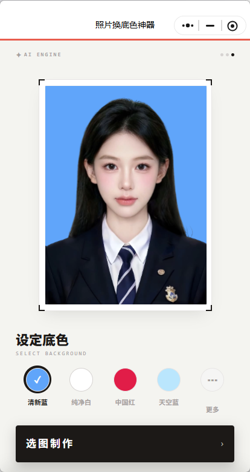
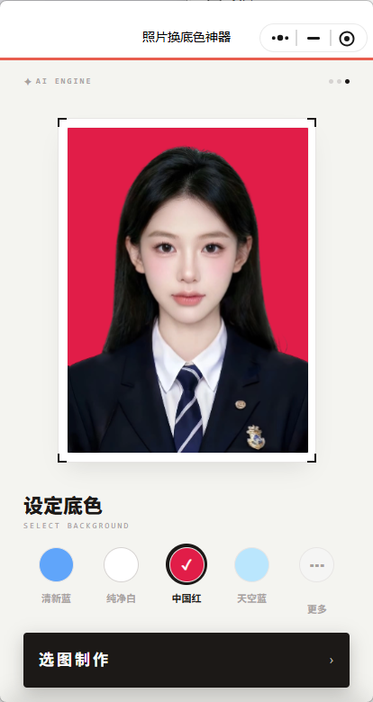
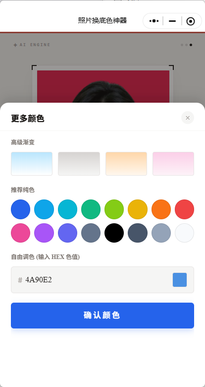
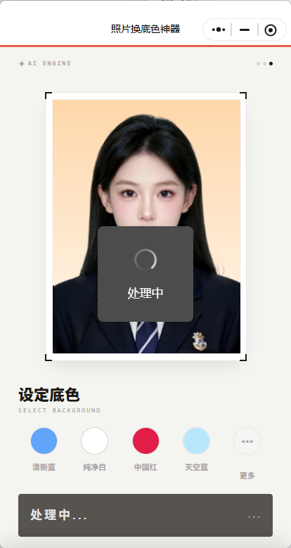
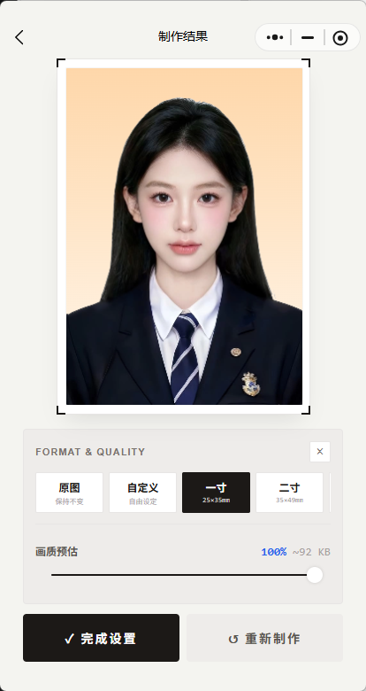

照片换底色神器 · 用户文档
急着要白底、蓝底、红底照片？上传一张图，选个底色，马上制作。
项目概览
- 项目类型： C 端照片换底色小程序用户文档
- 核心功能： 上传照片 → 选择底色 → AI 处理 → 调整尺寸与质量 → 保存到相册
- 适用场景： 证件照、报名照、头像、简历照、临时照片处理
- 受众： 需要快速换照片背景的普通用户
1. 关于照片换底色神器
1.1 核心价值：不用打开修图软件，也能快速换底色
有时候只是想换个照片背景，却要打开复杂修图软件，抠图、换底、调尺寸，来回折腾很久。
照片换底色神器就是为这种小需求准备的。
你只需要上传一张照片，选择想要的背景颜色，小程序会自动处理图片，并生成新的换底色照片。
常见的清新蓝、纯净白、中国红、天空蓝都可以直接选择。 还可以点 更多，选择渐变色、推荐纯色，或者输入 HEX 色值自定义颜色。
做好之后，可以继续调整图片尺寸和压缩质量，最后保存到相册。
2. 快速上手
三步完成换底色：上传照片、选择背景、保存结果。
2.1 上传照片
打开小程序后，先上传一张需要处理的照片。
适合上传的图片包括：
- 证件照；
- 简历照；
- 报名照；
- 头像照片；
- 需要更换背景的人像照片。

▲ 上传照片后，可以先预览当前背景效果
Tip：什么照片更适合？ 人物边缘清楚、背景不太复杂、光线均匀的照片，处理效果通常更稳定。
2.2 选择背景颜色
上传照片后，在 设定底色 区选择你需要的背景颜色。
常用颜色包括：
| 背景色 | 适合场景 |
|---|---|
| 清新蓝 | 常见证件照、报名照、头像 |
| 纯净白 | 简历照、证件材料、正式用途 |
| 中国红 | 部分证件照、考试报名、特定材料 |
| 天空蓝 | 更柔和的蓝底照片 |
| 更多 | 渐变色、推荐纯色、自定义 HEX 色值 |

▲ 点击颜色圆点，即可切换照片背景
如果预设颜色不够用，点击 更多，可以打开更多颜色面板。

▲ 更多颜色里可以选择渐变、推荐纯色，也可以输入 HEX 色值
2.3 开始制作
选好背景色后，点击 选图制作 或 开始制作。
小程序会进入处理状态，等待几秒即可生成新的照片。

▲ 处理中，请等待照片生成完成
处理完成后，会进入制作结果页面。
3. 制作结果
3.1 查看换底效果
在制作结果页，你可以看到换底后的照片。
页面会显示当前图片的基础信息，比如：
- 图片尺寸；
- 文件大小；
- 画质比例。

▲ 可以选择原图、自定义、一寸、二寸，并调整画质
你可以双指缩放，也可以单指拖动，调整图片在预览框中的位置。
3.2 保存到相册
确认效果后，点击 保存到相册。
保存时，系统可能会弹出相册权限请求。允许后，图片会保存到手机相册。
如果你还想继续调整，可以点击：
- 尺寸与压缩：调整照片规格和画质；
- 重新制作：返回前面步骤重新选择图片或底色。
4. 调整尺寸与压缩
有些报名系统、证件材料或平台上传入口，会要求固定尺寸和文件大小。
这时可以进入 尺寸与压缩。
4.1 选择常见尺寸
目前支持：
| 尺寸 | 说明 |
|---|---|
| 原图 | 保持原始尺寸 |
| 自定义 | 手动设置宽高 |
| 一寸 | 常见证件照尺寸 |
| 二寸 | 常见证件照尺寸 |
选择尺寸后，可以继续调整画质比例。
画质越高，图片越清晰，文件也会更大。 画质越低，图片更小，适合有上传大小限制的场景。
4.2 完成设置
调整完成后，点击 完成设置。
系统会重新生成符合尺寸和画质要求的图片。 确认无误后，再保存到相册。
5. 重新换图
如果上传错照片，或者想处理另一张图，可以点击 换图。
重新换图后，可以继续选择底色、制作结果、调整尺寸和保存。
这个功能适合连续处理多张照片，比如：
- 同一张照片试不同底色；
- 给多张照片统一做蓝底；
- 先处理证件照，再处理头像图。
6. 常见问题 FAQ
6.1 为什么人物边缘看起来不够干净？
可能和原图质量有关。
常见原因包括：
- 原图背景太复杂；
- 头发边缘和背景颜色太接近；
- 图片分辨率太低；
- 光线太暗或阴影太重。
可以试试换一张光线更清楚、背景更简单的照片。
6.2 可以自定义背景颜色吗？
可以。
点击 更多，在自由调色区域输入 HEX 色值，确认后即可应用到背景。
例如：
#4A90E2
6.3 可以做一寸、二寸照片吗？
可以。
在制作结果页点击 尺寸与压缩，选择一寸或二寸规格，再点击 完成设置。
6.4 图片保存失败怎么办？
可以先检查：
- 是否允许小程序访问相册；
- 手机存储空间是否充足；
- 当前网络是否稳定；
- 是否已经完成图片处理。
如果权限被拒绝，可以在微信的小程序权限设置里重新开启相册权限。
6.5 换底后的图片可以重新制作吗？
可以。
点击 重新制作，返回前面步骤重新选择底色或图片。
7. 隐私说明
- 你上传的照片仅用于当前换底色处理；
- 小程序不会主动公开你的图片；
- 保存图片时，需要你授权访问相册；
- 如果使用云端能力处理图片，数据会通过加密方式传输；
- 你可以随时在微信小程序权限设置中关闭相册相关权限。
文档集入口
如需查看其他小程序文档，可以点击：
文档版本
| 版本 | 日期 | 说明 |
|---|---|---|
| v1.0.0 | 2026-06-12 | 初始版本，包含上传照片、选择底色、更多颜色、制作结果、尺寸压缩、保存到相册和 FAQ |
© 2026 alison2fun · MIT License